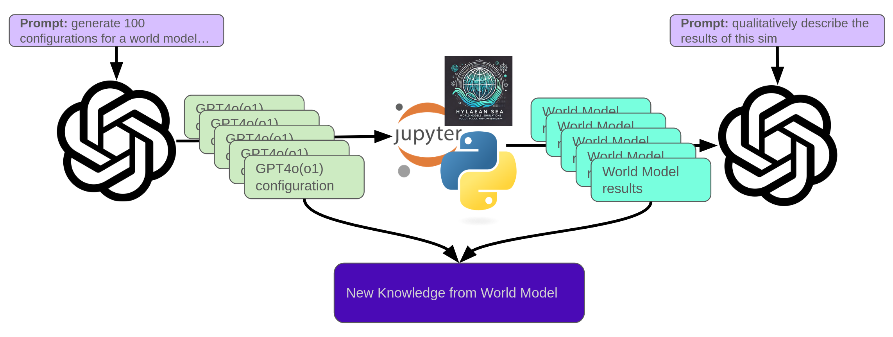
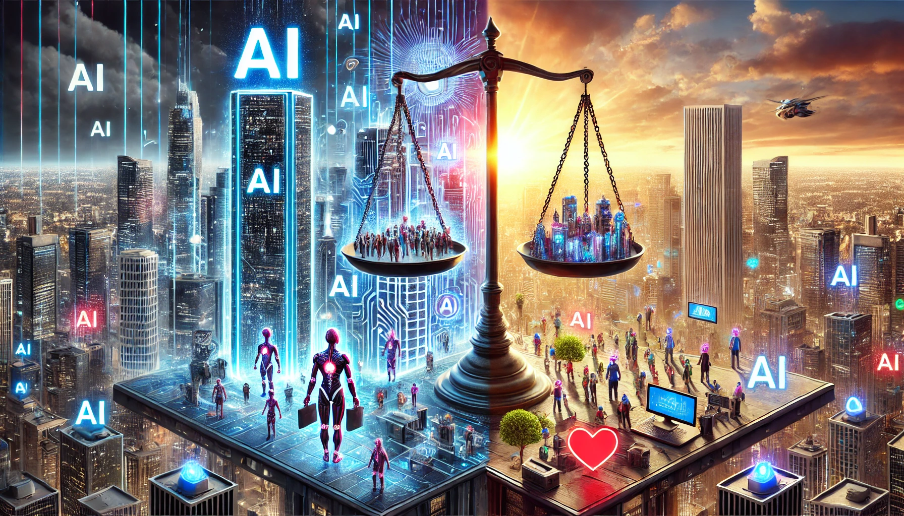
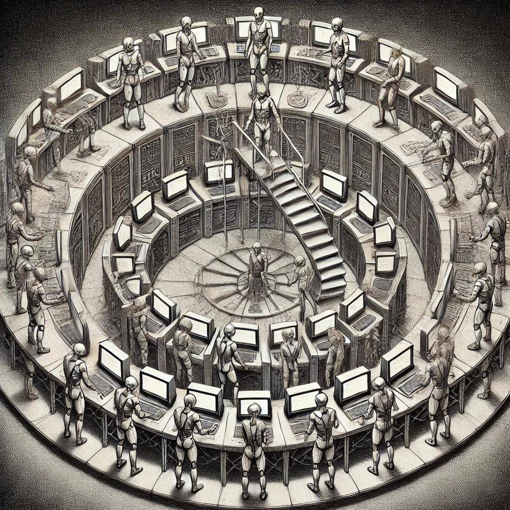

This is my space for collecting some interesting projects I have worked on. Enjoy -
Regolith Voxel
Regolith Voxel is
an experimental mining simulation game that serves as a testbed for reinforcement learning research. The project explores
how RL agents can learn to manage complex resource extraction operations through indirect control of semi-autonomous mining equipment.
The core concept investigates indirect control paradigms where players provide high-level strategic direction
rather than direct commands. Each piece of mining equipment operates autonomously, making local decisions based on its type,
position, and observations of the mineral-rich environment. This creates emergent behavior as multiple agents coordinate
their activities—samplers scout for resources, miners extract materials at different depths, refiners process raw ore,
and transport units move goods between sites.
What makes this particularly interesting for RL research is the network effects between agents. A single
agent's optimal strategy depends heavily on what other agents are doing: transport units need miners to produce ore,
refiners need raw materials delivered, and efficient sampling can guide mining operations to high-value deposits. This
multi-agent coordination challenge, combined with the hierarchical organization of equipment and the spatial dynamics
of resource management, provides a rich environment for exploring how reinforcement learning agents can learn to cooperate
and adapt in complex systems.
Built with Rust and the Bevy game engine, the project features procedurally generated mineral maps, a drag-and-drop
equipment hierarchy system, and a modular architecture designed to integrate RL training loops. Future work will focus
on implementing policy networks for autonomous equipment behavior and experimenting with reward structures that encourage
efficient multi-agent coordination.
ThreeJS Map
This is the current state of a very simple map and terrain visualization in threejs. It will accept latitude and longitude
and zoom level and render a single tile in the canvas. The terrain data is provided by
Mapzen documented at
tilezen under the
Creative Commons BY 4.0 license.
The topo map is provided by
Open Topo Map under the
Creative Commons BY-SA 4.0 license.
My code can be found at
ThreeJS Map.
Try playing around with the "random location" button.
In February-2025, I completed Blue Dot Impact's AI Alignment course.
In this course we are exposed to a wide variety of AI alignment techniques, ideas, and research approaches. In the final third of the course, I completed
a project in Computable Policy and World Model integration. You can find the post for this project at
Hylaean Sea. As with all of these projects (it seems) I plan to develop this
concept more in the future.

I have also been engaging a local chat group on some high level questions about AI Alignment Philosophy and will be including those prompts here as well.
Distribution of AI

A thought I have been pondering recently: assuming the economic, leisure, and cultural benefits of AI are very large (they may not be but lets assume they are), what are the major tipping points or key factors that will determine if these AI resources are concentrated in the hands of a few AI elite, or the AI upper class; or are spread out in society for everyone's benefit? Is it education, fear, use in businesses, open source models, or something else that could make the difference between it being available to the masses vs locked away?
AI Unlearning
There is significant research into AI alignment at the fine-tuning stage. Several techniques attempt to make LLMs forget, or unlearn harmful
knowledge that the base model acquired in the training phase on bulk internet data. We try to make it "unlearn" how to make a bomb, or how to
make a nerve-agent for example. Is this wise? Don't we want LLMs to have harmful knowledge so that they can recognize it, as it comes up in
prompts? Does this have parallels for human knowledge? Is there "harmful knowledge" that we should try to unlearn as a society?
Bootstrap Training
If we need humans to generate training or fine tuning data to train advanced AI's can they ever become more capable than humans?
Can a human train something more cognitively capable than itself? If so, how do we make sure that these more capable AIs are aligned with our goals?

Blender Con 2024
I was fortunate to have my talk selected for Blender Con 2024. I expected to have just a 20 minute talk but I was slotted for a live 50-minute walkthrough of some of the projects that appear on this page.
I began with a walkthrough of the geometry nodes approach to modeling parametric surfaces, then demonstrated how to use modifiers and scripting to model the 3D dodecahedron moon.
All 12 moon .stl files are available under a Creative Commons license at Printables.com.
Ideal Gas Simulation
My daughter was studying the states of matter in her science class and she had a fairly good grasp of the molecular (non-quantum) mental model of matter and how it translates
to the physical properties of the material in different states. She, however had a bit of trouble with visualizing why an ideal gas will take the shape of its container. After much
explaining, pretending we were molecules and dancing around, and throwing fruit off the walls and ceiling of the kitchen, we decided to have chatgpt help us visualize this in
a web simulation. The simulation was written in threejs and can be found at Ideal Gas Simulation
Dodecahedron Moon
This is a 3D printed design of the moon (real topography from
NASA Moon Kit) broken
into the curved hexagonal faces of a dodecahedron. The whole design is held together by
force-fit magnets. The full 12 STL files will be posted soon at Printables.
Frequency Difference
An exploration of the intersection of quadrics. Frequency difference (doppler difference) from a location to two different moving sensors
can be modeled as two intersecting cones with related cone angles. Set to the music of Hans Zimmer, it can be quite mesmerizing.
CGI Sandbox
An exploration of CGI with drone footage. So far done only with Blender motion tracking. Hopefully evolving over the coming months. Drone footage courtesy of my buddy Greg.
Intersecting Hyperboloids
A visualization of two intersecting hyperboloids with one of their foci shared. It is interesting to note that the intersection pencil will always intersect the plane formed by the three foci at a right angle.
Time Difference Visualization
A visualization of a time difference surface made in Blender.
Alexa-Enabled Maze Solving Robot
Alexa Enabled Maze Solving Robot - An entry into a contest to link Amazon Alexa Gadgets to Lego Mindstorms. I made a robot that you gave instructions to via Alexa to help it solve a Lego maze.